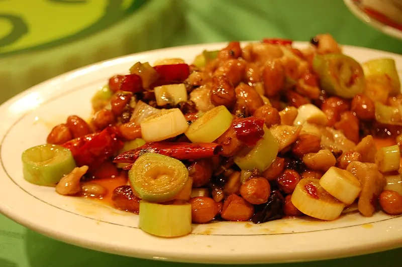
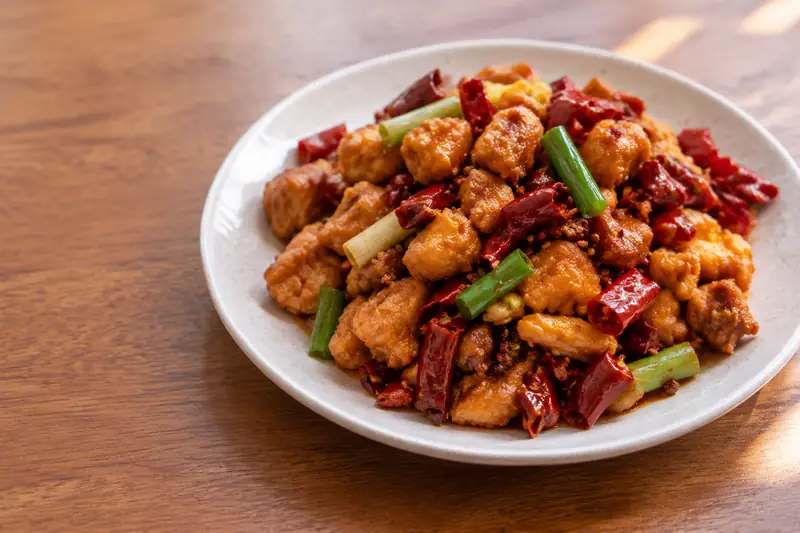
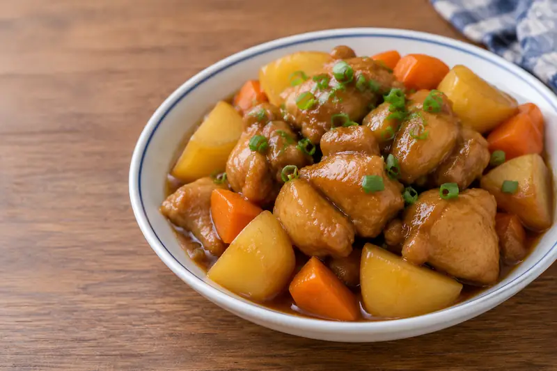

Poultry禽类
Boneless chicken thigh鸡腿肉
At Costco在 Costco
Typical pack常见规格: Kirkland Signature boneless skinless thighs, 2 kgKirkland 去骨去皮鸡腿肉，2 公斤
Price varies; check the warehouse or costco.ca.价格随时变化，请看仓库或 costco.ca。
Sample date取样日期 2026-11-16. Availability varies by warehouse and season; this is not a stock guarantee.有无因门店和季节而异，不是库存保证。
Store and portion储存与分装
Keep at 0-4°C and use raw poultry within 1-2 days; freeze at -18°C for about 9 months (whole birds about 12). Thaw in the fridge, not on the counter.冷藏 0–4°C，生禽肉 1–2 天内用完；冷冻 −18°C 可放约 9 个月（整只约 12 个月）。解冻放冷藏，不要在台面上放。
Portion on the day you buy: one meal each (300-500 g), laid flat in bags with the air pressed out and a date written on, so it freezes and thaws quickly.回家当天分成一餐的量（每份 300–500 克），平铺装袋、压出空气、写上日期再冷冻，平铺冻得快、解冻也快。
Per 100 g (Canadian Nutrient File)每 100 克（加拿大营养素数据库）
Chicken, broiler, thigh, meat, raw · code 853
121 kcal · protein蛋白 19.66 g · fat脂肪 4.12 g · carbs碳水 0 g · fibre纤维 0 g · sodium钠 95 mg
No priority allergen.无重点过敏原。
Recipes with this用到它的菜
 Chicken Noodle Soup美式鸡肉蔬菜面汤50 min分钟 · 6 servings份 · Western西式
Chicken Noodle Soup美式鸡肉蔬菜面汤50 min分钟 · 6 servings份 · Western西式 Greek Chicken Souvlaki with Tzatziki希腊柠檬烤鸡串配酸奶黄瓜酱65 min分钟 · 4 servings份 · Greek / Mediterranean希腊/地中海Teriyaki Chicken Bento照烧鸡腿便当37 min分钟 · 2 servings份 · Japanese日Coq au Vin红酒炖鸡155 min分钟 · 4 servings份 · French法Xinjiang Big Plate Chicken大盘鸡90 min分钟 · 4 servings份 · Northwestern / Xinjiang西北/新疆Dakgalbi春川辣炒鸡45 min分钟 · 4 servings份 · Korean韩Shaoxing Drunken Chicken醉鸡515 min分钟 · 4 servings份 · Jiangnan江浙
Greek Chicken Souvlaki with Tzatziki希腊柠檬烤鸡串配酸奶黄瓜酱65 min分钟 · 4 servings份 · Greek / Mediterranean希腊/地中海Teriyaki Chicken Bento照烧鸡腿便当37 min分钟 · 2 servings份 · Japanese日Coq au Vin红酒炖鸡155 min分钟 · 4 servings份 · French法Xinjiang Big Plate Chicken大盘鸡90 min分钟 · 4 servings份 · Northwestern / Xinjiang西北/新疆Dakgalbi春川辣炒鸡45 min分钟 · 4 servings份 · Korean韩Shaoxing Drunken Chicken醉鸡515 min分钟 · 4 servings份 · Jiangnan江浙 Japanese Chicken Curry日式咖喱鸡90 min分钟 · 4 servings份 · Japanese日Karaage Fried Chicken日式炸鸡53 min分钟 · 2 servings份 · Japanese日Mouthwatering Chicken口水鸡47 min分钟 · 4 servings份 · Sichuan川
Japanese Chicken Curry日式咖喱鸡90 min分钟 · 4 servings份 · Japanese日Karaage Fried Chicken日式炸鸡53 min分钟 · 2 servings份 · Japanese日Mouthwatering Chicken口水鸡47 min分钟 · 4 servings份 · Sichuan川
Kung Pao Chicken宫保鸡丁45 min分钟 · 2 servings份 · Sichuan川Spicy Diced Chicken辣子鸡丁45 min分钟 · 2 servings份 · Sichuan川
Chongqing Chilli Chicken重庆辣子鸡40 min分钟 · 3 servings份 · Sichuan川Lemon Chicken Orzo柠檬鸡肉米粒面45 min分钟 · 4 servings份 · Greek / Mediterranean希腊/地中海 Oyakodon (Japanese Chicken and Egg Rice Bowl)亲子丼（日式鸡肉滑蛋盖饭）50 min分钟 · 2 servings份 · Japanese日
Oyakodon (Japanese Chicken and Egg Rice Bowl)亲子丼（日式鸡肉滑蛋盖饭）50 min分钟 · 2 servings份 · Japanese日
Braised Chicken with Potatoes土豆烧鸡45 min分钟 · 3 servings份 · Chinese home-style家常Taiwanese Three-Cup Chicken三杯鸡35 min分钟 · 2 servings份 · Fujian / Taiwanese闽台